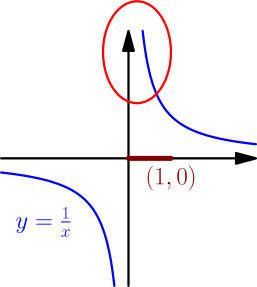
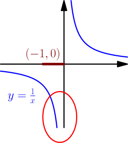
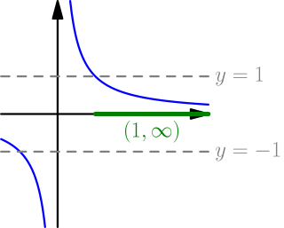
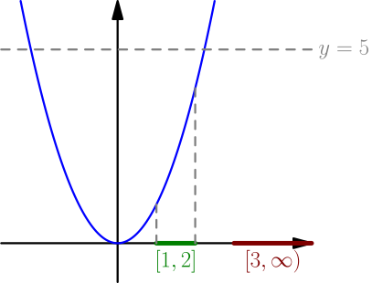

Limits and bounded functions¶
A couple limit derivations on this site rely on some functions being bounded. This simplifies them a lot. This page explains what it means for a function to be bounded and what that has to do with limits.
We say that a function $f$ is bounded on an interval $I$, if there is a positive constant $M$ so that $$ -M \le f(\text{any number in $I$}) \le M. $$ Basically, this means that inside the interval $I$, the function does not get arbitrarily large values, i.e. there is some upper bound $M$ that no value exceeds. Functions with negative but arbitrarily "large" values are banned too.
Examples:
-
The function $f(x) = \frac{1}{x}$ is unbounded (i.e. not bounded) on $(0,1)$.
No matter what number $M$ you choose,
some of the values of $\frac{1}{x}$ are larger than $M$.

It is also not bounded on $(-1,0)$, because there it gets arbitrarily negative values, some of which will be smaller than $-M$.

-
The same function $f(x)=\frac{1}{x}$ is bounded on any interval that doesn't go "near" $0$, such as $(1,2)$ or even $(1,\infty)$.
For these two intervals we can choose $M=1$,
because the graph stays between the lines $y = \pm 1$ on top of that interval.

- In the previous examples, we could just as well choose $M=2$ instead of $M=1$, because this gives even more “room” for the function. In fact, there's always multiple ways to choose the $M$ in the definition of bounded: if some value of $M$ works, then larger values will work as well.
-
The function $g(x)=x^2$ is bounded on any finitely long interval,
such as $[1,2]$ (for this interval, $M=5$ works, for example).
It is unbounded on any infinitely long interval, such as $[3,\infty)$.

Bounded if limit exists¶
The definition of bounded is related to the definition of limit, but not quite the same. The definition of limit applies to all output intervals, including very small output intervals, whereas the definition of bounded only needs some upper bound $M$ that can be as large as needed. Basically, the definition of limit requires more, so if the definition of limit is satisfied, the function is bounded.
Let's go through that idea again, but in more detail. The definition of limit is that for any output interval $I_y$ centered around the limit, there is an input interval $I_x$ centered around $a$ so that $$ f(\text{any number in $I_x$ except $a$}) \in I_y. $$ Let's take any one of the infinitely many output intervals that this applies to. Because it is finitely long, we can choose $M$ to be large enough for the entire output interval to be between $-M$ and $M$, and so $$ -M \le f(\text{any number in $I_x$ except $a$}) \le M. $$ This works for any function that has a limit at $a$. It doesn't matter what the limit is, as long as it exists.
If the limit $\lim_{x \to a} f(x)$ exists, then $f$ is bounded on some interval centered around $a$, with the midpoint $a$ excluded.
An interval with the midpoint removed is no longer an interval, but we can still define boundedness in the same way. We need to exclude the midpoint because $f(a)$ might be undefined even if the limit $\lim_{x \to a} f(x)$ exists: by design, limits avoid using the value of the function at $a$, and only use values near $a$.
Bounded times small¶
Not all bounded functions have a limit. Consider the "jumping function", for example. Basically, the problem is that the values of a bounded function aren't necessarily very close to each other.
However, if we multiply the values of a bounded function and a "small" function, then all values of the multiplication should be somewhat small as well. Multiplying with the bounded function can make the values $M$ times bigger, but we should be able to compensate for that by making the "small" function output even smaller values. This should cause the "bounded times small" function to output as small values as we need. This also works with negative values: we can basically ignore the minus signs because of how $-M \le f(x) \le M$ and the definition of limit are symmetric.
Again, let's go through this idea in more detail. Let $s$ be a function satisfying $\lim_{x \to a} s(x) = 0$; this is the "small" function, and this is what "small" actually meant above. Let $b$ be a function that is bounded on some interval $I$ centered around $a$ with the midpoint $a$ excluded, so $$ -M \le b(\text{any number in $I$ except $a$}) \le M. $$ We show that $$ \lim_{x \to a} b(x)s(x) = 0. $$ Let $I_y=(-\epsi,\epsi)$ be any output interval centered around $0$. We can't just use this output interval with the limit $\lim_{x \to a} s(x) = 0$, because we also need to compensate with $M$. Let's do that by taking another interval $$ \left( -\frac{\epsi}{M}, \frac{\epsi}{M} \right), $$ which will basically cause $s(x)$ to output values that are $M$ times smaller than we need. Because $\lim_{x \to a} s(x) = 0$, there is an input interval $I_x$ so that $$ s(\text{any number in $I_x$ except $a$}) \in \left( -\frac{\epsi}{M}, \frac{\epsi}{M} \right), $$ or with slightly different notation, $$ -\frac{\epsi}{M} < s(\text{any number in $I_x$ except $a$}) < \frac{\epsi}{M}. $$ If $x$ is any number that is in $I$ (the interval on which $b$ is bounded by $M$) and in $I_x$ (the input interval for limit of $s$), we now have $$ -M \le b(x) \le M \quad \text{and} \quad -\frac{\epsi}{M} < s(x) < \frac{\epsi}{M}. $$ If $s(x)$ and $b(x)$ are both positive, replacing them with larger values $\frac{\epsi}{M}$ and $M$ gives us a bigger value than $s(x)b(x)$, so $$ b(x)s(x) < \frac{\epsi}{M} \cdot M = \epsi. $$ This also works if $b(x)=0$ or $s(x)=0$. If we also allow negative values, we can still do the same thing with absolute values, as in $$ |b(x) s(x)| = |b(x)| |s(x)| < \epsi. $$ This shows that $$ -\epsi < b(x)s(x) < \epsi, $$ For this to work, we need $x$ to be in both $I_x$ and $I$, so we can take our input interval to be whichever of the two intervals is smaller.
If $\lim_{x \to a} s(x) = 0$ and $b(x)$ is bounded on some interval centered around $a$ with the midpoint $a$ excluded, then $$ \lim_{x \to a} b(x)s(s) = 0. $$
Example¶
We calculate $$ \lim_{x \to 0} x \sin(3x^2+42x-69\cos(x^7)). $$ We haven't derived convenient rules for calculating limits yet, but this limit is now doable. Because $\sin(\dots)$ is the $y$ coordinate of a point on the unit circle, it is bounded between $-1$ and $1$. We also know that $\lim_{x \to 0} x = 0$ (see this example).